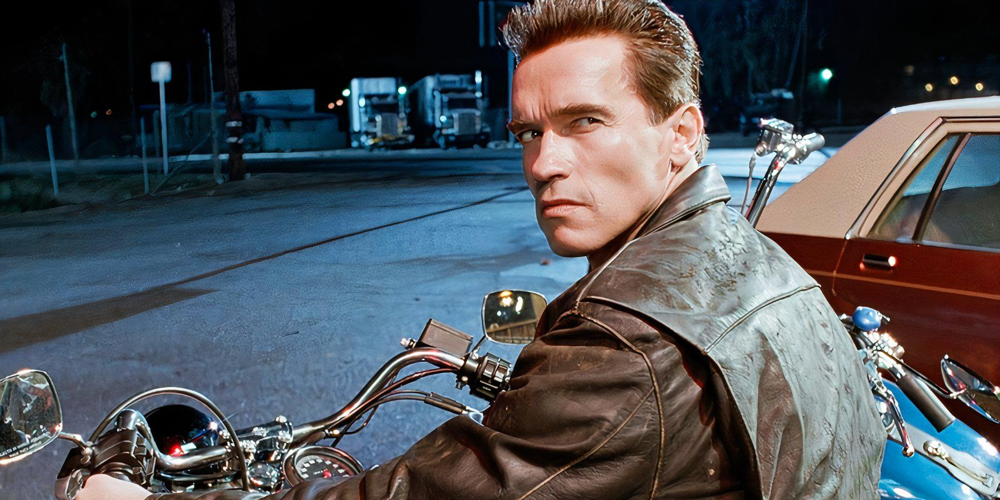

Argumento
En el año 1995, unos once años después de los eventos de The Terminator, John Connor (Edward Furlong) vive en Los Ángeles con sus padres adoptivos. Su madre Sarah Connor (Linda Hamilton), lo preparó toda su infancia para su futuro papel como líder de la «Resistencia humana» contra Skynet, pero tras intentar bombardear una fábrica de computadoras es arrestada y enviada a un hospital psiquiátrico a cargo del doctor Peter Silberman (Earl Boen), quien se encarga de supervisar a Sarah.
Skynet envía un nuevo Terminator, un T-1000 (Robert Patrick), al pasado para matar a John; este está compuesto de una «polialeación mimética», un metal líquido que le permite tomar la forma y apariencia de cualquier persona o cosa que toque. Aunque no puede imitar máquinas complejas como pistolas o bombas, es capaz de moldear partes de sí mismo en cuchillos y armas punzantes, además de imitar la voz y la apariencia de los humanos. El T-1000 asume la identidad de un policía y persigue a John. Mientras tanto, el John Connor del futuro (del año 2029) enterado del plan de Skynet, decide enviar a un Terminator T-800 (Arnold Schwarzenegger) —modelo 101 de Cyberdyne Systems— reprogramado, similar al que persiguió a Sarah en el año 1984, con la misión de proteger a su homólogo más joven del T-1000.
El T-800 y el T-1000 encuentran a John en un centro comercial y se produce una persecución en la que John y el T-800 escapan en motocicleta; el T-800 le explica al niño que le programaron para protegerlo y obedecerlo. Temiendo que el T-1000 mate a Sarah, John ordena al T-800 que le ayude a liberarla del hospital psiquiátrico encontrando a Sarah en medio de su propio intento de fuga; esta inicialmente está aterrorizada por encontrarse con el Terminator, pero acepta su ayuda después de ver que la protege del T-1000 y los ayuda a escapar.

El T-800 informa a John y Sarah sobre Skynet, la inteligencia artificial que iniciará un holocausto nuclear en el «Juicio Final» y continuará creando máquinas que acabarán con la humanidad. Sarah se entera de que el responsable más directo de la creación de Skynet es Miles Dyson (Joe Morton), un ingeniero de Cyberdyne Systems que trabaja en un nuevo y revolucionario microprocesador que formará la base de dicha inteligencia. Sarah obtiene armas de un viejo amigo llamado Enrique Salceda (Cástulo Guerra) para huir con John a México, pero después de tener una pesadilla sobre una explosión nuclear, se despierta y se marcha sola dispuesta a matar a Dyson antes de que culmine su investigación.
Tras dispararle en su casa, se ve incapaz de matarlo frente a su familia. Tras adivinar su plan, John y el T-800 llegan e informan a Miles de las consecuencias de su trabajo. Ahí se enteran de que gran parte de su investigación se ha realizado mediante ingeniería inversa a partir de la CPU y el brazo del primer Terminator. Minutos después, se dirigen al edificio de Cyberdyne Systems para destruir todo el trabajo; John y Dyson recuperan el brazo y la CPU, mientras el T-800 y Sarah ponen bombas para destruir el laboratorio. Un equipo SWAT llega alertado por los guardias, pero el T-800, a quien John le había prohibido matar personas, hiere en las piernas a los policías y roba un furgón para huir. Miles, quien fue herido de muerte, decide sacrificarse y detona las bombas mientras el resto huye.
El T-1000 se entera por radio del ataque a Cyberdyne Systems y parte hacia el lugar, persiguiéndolos primero en un helicóptero y posteriormente en un camión cisterna que transporta nitrógeno líquido hasta una fundición, donde producto de la colisión del camión, el nitrógeno líquido se dispersa y congela al T-1000; el T-800 lo destruye de un disparo, pero el calor de las calderas lo devuelve a su estado líquido.
Mientras Sarah y John escapan por las instalaciones, ambos Terminators se enfrentan hasta que el T-1000 deja gravemente dañado al T-800 y logra desactivarlo al dañar su fuente de energía. Posteriormente, se presenta frente a John con la apariencia de Sarah, pero no consigue engañarlo y la verdadera Sarah lo enfrenta e incapacita al dispararle con una escopeta de corredera de alto poder evitando que se regenere, mientras con los impactos intenta empujarlo a una caldera de metal fundido, sin embargo, se queda sin municiones antes de lograrlo.
El T-800 se reinicia y le dispara con un lanzagranadas al T-1000, haciéndolo caer en la caldera, donde es destruido; John también arroja los componentes del Terminator original a la tina. Después, el T-800 pide a Sarah que lo baje hasta el acero para evitar el potencial peligro que significan la presencia de sus componentes para crear a Skynet. Sarah mira al futuro con esperanza, con la creencia de que si una máquina puede aprender el valor de la vida humana, es posible que la humanidad no esté condenada a la autodestrucción.